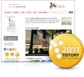
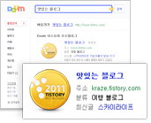
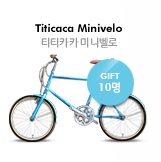

우수블로그 IT본문
우수블로그 지원 안내
-
우수블로그 배지
우수 블로그 배지 플러그인을 드리며

PC와 모바일 모두 적용할 수 있습니다. -
티스토리 초대장
언제든지 친구들을 초대할 수 있도록
티스토리 초대장 100장을 드립니다. -
검색스페셜
Daum 검색에서 우수블로그 관련 내용을

검색하시면 특별한 소개화면이 보여집니다. -
우수블로그 지원 상품
우수블로그만을 위한

특별한 선물을 드립니다.